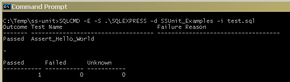

SS-Unit is a unit testing framework for SQL Server (i.e. T-SQL). It comprises of a set of stored procedures that allow you to write unit tests for your SQL objects and code in T-SQL itself using the familiar xUnit model. By this I mean that the concepts of Fixtures, the SetUp & TearDown helper functions and use of AssertXxx functions to verify expectations are all present. Naturally there are limitations to T-SQL that make these concepts less accessible than in a language like C# but they should be pretty easy to grasp.
For a little more rationale around why you might choose to unit test your SQL code this way rather than through, say, your back-end services see my blog posts You Write Your SQL Unit Tests in SQL? & The Public Interface of a Database.
The easiest way to see how SS-Unit works is to look at the examples which are
contained in the SS-Unit\Examples folder. The *.dbo.sql
files are intended to represent the production code and the *.test.sql
scripts are the unit tests. You can run the examples either in batch mode (just
as your build server would) this way:-
C:\SS-Unit\Examples> BuildDatabase .\SQLEXPRESS C:\SS-Unit\Examples> RunTests .\SQLEXPRESS
or you can build the example database (with SS-Unit applied) and run the unit test scripts interactively through a GUI tool such as SQL Server Management Studio (SSMS):-
C:\SS-Unit\Examples> BuildDatabase .\SQLEXPRESS C:\SS-Unit\Examples> SSMS
These batch files take the name of the SQL Server instance and assume a database name of "SSUnit_Examples". The command line above shows how to access a local instance of SQL Server Express which is freely available and makes an excellent tool for developing SQL code via TDD as its limitations are beyond the scope of what unit testing requires.
NB: These batch files invoke SQLCMD to run the various .sql scripts and so
you need to have SQLCMD on your PATH.
Most unit test frameworks come with some sort of binaries, but because this is
SQL based it effectively comes as source code. It is intended that you apply
it to your baseline database schema and then run your set of test scripts.
There is a batch file in the Framework folder called Install.cmd
that you can use to load the test framework into any database, e.g.
C:\SS-Unit\Framework> Install .\SQLEXPRESS SSUnit_Examples
The note above about the dependency on SQLCMD also applies to the
Install.cmd script.
Most likely you will already have your code in some form of Version Control System and also have some tool (or batch files) to create your baseline database. Because this library comes in source form you can just add it to your 3rd party area and then either use the supplied batch file or manually integrate it into your own build system.
The framework uses its own schema 'ssunit' and so there should be no conflicts between the objects in the framework and your production codebase.
It's assumed that you're already familiar with the xUnit testing framework - probably NUnit - but if not, then as long as you have used one of the more popular ones SS-Unit should make sense. As mentioned in the Introduction some artistic license was required to map the mechanisms a language like C# has at its disposal for metadata and reflection onto the much simpler T-SQL world.
So, let's start with the canonical unit test equivalent of the "Hello World" program beloved by programmers everywhere:-
create procedure test._@Test@_Assert_Hello_World
as
declare @expected varchar(max);
set @expected = 'hello world';
exec ssunit.AssertStringEqualTo @expected, 'hello world';
go
exec ssunit.RunTests;
If you run this piece of code in SSMS (using, say, the SSUnit_Examples database) you should see the following output:-

Alternatively you can save the query into a text file and run it with SQLCMD:-
The first result set shows you that you ran 1 test; it passed and was called "Assert_Hello_World". Below that is a second result set showing you a summary of the test outcomes for that run.
To make things a little more interesting, change either the expectation or the actual value to something different and run the test again. I changed the actual value to "hello ss-unit" and got this:-
exec ssunit.AssertStringEqualTo @expected, 'hello ss-unit';

Grrr, our first failed test! This time the outcome has changed to "FAILED" and the "Failure Reason" column is populated with a simple message that shows you why the comparison failed.
As one more final simple exercise, comment out the assert. This time the test is deemed "inconclusive" and so the outcome changes to "Unknown":-
--exec ssunit.AssertStringEqualTo @expected, 'hello ss-unit';

It is expected that all code paths should assert at least one condition to distinguish from the scenario where an assert has just been forgotten.
It should be pretty obvious that tests are written as stored procedures - one
procedure per test. It should also be apparent that the end of the SQL script
must contain a call to invoke the unit test runner (exec ssunit.RunTests)
at least when using a GUI tool like SSMS to run the tests.
What is probably less obvious is why there is
no drop procedure statement and why there are funny _@
characters in the name...
If you've used NUnit you'll be accustomed to annotating your unit tests with a
[Test] attribute. This is how NUnit finds your tests without you
having to register them. Sadly T-SQL doesn't support attributes and so we have
to find another way to achieve the same effect. So, it uses an adornment on the
test name instead: _@Test@_. Hopefully the use of the '@' symbol will
make you think attribute. So these two are supposedly equivalent:-
[Test]
public void Thing_ShouldDoThat_WhenItDoesThis()
{
. . .
}
create procedure _@Test@_Thing_ShouldDoThat_WhenItDoesThis
as
. . .
go
As for why you don't need to write the usual if object_id()/drop procedure
prologue, that's because the test framework drops the procedure for you. Why?
Because unit test names should be verbose and nothing kills your flow
more than having to fix your script because you forgot to drop the proc first or
you misspelled it. This then means that you can alternate between the production
code and writing/running the tests very rapidly.
A slightly more subtle point you may have noticed is that all the SS-Unit
objects live in a separate schema called ssunit. This gives it all
the benefits of namespaces to avoid name clashes with your test or production
code. The test runner assumes that all tests live in a schema called test
but that can be overridden as explained later.
Due to the limitations of T-SQL not supporting overloading based on type the assert names have to encode the type instead. So far only a basic set of assert procedures have been written for the core types - integers, strings and datetimes. Given that SQL Server will do most convert type conversions automatically you can still get a lot done with just these few:-
| Assert Procedure | Description |
|---|---|
| AssertPass | Denotes the test as having conclusively passed |
| AssertFail | Denotes the test as having conclusively failed |
| AssertNotImplemented | Fails the test with a reason of "Not implemented" |
| AssertTrue | Compares the resultant value to 1 (i.e. true) |
| AssertFalse | Compares the resultant value to 0 (i.e. false) |
| AssertThrew | Executes a helper procedure which performs the test and should result in an error being thrown |
| AssertXxxEqualTo | Compares the resultant Xxx value to another for equivalence |
| AssertXxxNotEqualTo | Compares the resultant Xxx value to another for a difference |
| AssertXxxLessThan | Performs a < comparison with the resultant Xxx value |
| AssertXxxLessThanOrEqualTo | Performs a <= comparison with the resultant Xxx value |
| AssertXxxGreaterThan | Performs a > comparison with the resultant Xxx value |
| AssertXxxGreaterThanOrEqualTo | Performs a >= comparison with the resultant Xxx value |
| AssertXxxIsNull | Compares the resultant Xxx value to NULL |
| AssertIntegerBetween | Compares an integer to a range (lower and upper bounds are inclusive) |
| AssertStringLike | Compares two strings using the LIKE operator for a match |
| AssertStringNotLike | Compares two strings using the LIKE operator for a difference |
NB: AssertPass and AssertFail provide the underpinnings of the framework - all others are implemented in terms of these two.
You will notice that each 'set' of asserts has an explicit overload for comparing with NULL. It would have been quite easy to make the AssertXxxEqualTo procedures support a comparison with NULL, but I felt that goes against how NULL's are handled in real SQL. You learn early on that NULL can be synonymous for 'unknown' and so you never write "x = null", but "x is null". Consequently in SS-Unit you don't say "AssertXxxEqualTo null, @x", but "AssertXxxIsNull @x".
SQL Server provides a Try/Catch mechanism that allows you to use an exception
style of programming to deal with errors via the RAISERROR keyword. However,
writing a unit test to verify that an action throws can be very verbose; so to
avoid the boilerplate code obscuring the salient part of the test the
AssertThrew procedure takes an extra argument that is the name of
a helper procedure to invoke as part of the test, e.g.
create procedure test._@Helper@_My_Procedure_That_Throws
as
-- simulate a constraint violation
raiserror('my error', 16, 1);
go
create procedure test._@Test@_ShouldThrow
as
exec ssunit.AssertThrew 'my error', 'test._@Helper@_My_Procedure_That_Throws';
go
There are also two failure modes of an AssertThrew style test as
opposed to the usual one. First the helper procedure may not cause an error to
be thrown, and secondly the error that is thrown may not the one expected - hence
the @error argument. For example, when testing constraints, it's too
easy to write a test that causes a primary key or different foreign key
violation by accident instead of the desired failure and so you need the extra
comparison.
The problem with scraping error messages to verify a test is that they are
subject to change, at least for application specific errors. And so the message
comparison is done using the LIKE operator so that you can perform
a fuzzy match. One benefit to explicitly naming your constraints is that you can
then use them as the @error message instead of something more
vague, e.g.
-- Matches any FK violation
exec ssunit.AssertThrew '%FOREIGN KEY%constraint%', 'test._@Helper@_My_Procedure_That_Throws';
-- Matches specific constraint violation through constraint name
exec ssunit.AssertThrew '%MyTable_FK_MyColumn%', 'test._@Helper@_My_Procedure_That_Throws';
The _@Helper@_ attribute is used to indicate a helper procedure
that should also be deleted once the tests have run. If the attribute is not
applied then it must be handled either with the TestSchema_Clear
utility procedure or manually with a traditional drop procedure
call.
One technique for reducing noise and improving performance within the arrangement phase of a test is to factor out code into a helper function. The xUnit framework generally provides two mechanisms for two separate pairs of helper methods - one pair run per-test and the other pair run per-fixture. Within each pair the "SetUp" method is run before the test(s) and the "TearDown" method after.
In NUnit the first pair of methods are annotated with the [TestSetUp]
and [TestTearDown] attributes, which in SS-Unit is mapped to the
name adornments _@TestSetUp@_ and _@TestTearDown@_.
Naturally it follows that the fixture-level pair in SS-Unit are similarly named
_@FixtureSetUp@_ and _@FixtureTearDown@_. In both
cases the rest of the procedure name is irrelevant and can be left off if so
desired. Each of the four helper procedures is optional too, so you can leave
out any that you don't need.
This just leaves the question of how you define a fixture. In NUnit it is the
name of the class that contains the test methods, but there are no classes in
T-SQL and so once again we must look to adorn the test name. This time we
use the format _$FixtureName$_. So, putting this all together we
have the following example of how to write a test that has both fixture-level
and test-level SetUp & TearDown helpers:-
create procedure test._@FixtureSetUp@_$CounterTests$_
as
create table test.TestCounter
(
Value int
);
insert into test.TestCounter(Value) values(1);
go
create procedure test._@FixtureTearDown@_$CounterTests$_
as
drop table test.TestCounter;
go
create procedure test._@TestSetUp@_$CounterTests$_
as
update test.TestCounter
set Value = Value + 10;
go
create procedure test._@TestTearDown@_$CounterTests$_
as
update test.TestCounter
set Value = 1;
go
create procedure test._@Test@_$CounterTests$_CounterShouldEqualElevenAfterSetUp
as
declare @value int;
select @value = Value from test.TestCounter;
exec ssunit.AssertIntegerEqualTo 11, @value;
go
exec ssunit.RunTests;
There is no restriction on the number of fixtures and tests that you can define
in a single script. If you prefer you can run all the test creation scripts in
one phase and then execute ssunit.RunTests right at the end in one
go.
The procedure you invoke to run the test suite (ssunit.RunTests)
supports a number of parameters to control various aspects of test execution
and reporting:-
| Parameter | Description |
|---|---|
| @schemaName | Specify this if you want to run tests in a schema other than 'test' |
| @displayWidth | When running in 'batch mode' the console width is assumed to be 80 chars wide, use this parameter to widen or truncate the output |
| @reportResults | An enumeration value used to control the output of the per-test results (see blow) |
| @reportSummary | An enumeration value used to control the output of the results summary (see blow) |
| @isInteractive | Override the SQL client type by setting this to 0 for batch mode and 1 for interactive |
The following example shows how to use a different schema and widen the output when running in batch mode:-
exec ssunit.RunTests @schemaName = 'unit_test',
@displayWidth = 180;
The @reportResults and @reportSummary parameters are
enumeration values of the pseudo-type ssunit.ReportCondition.
Essentially this is a tinyint value with UDFs taking the place of
the enumeration symbols (so you don't hard-code a literal value):-
| Value | Symbol | Description |
|---|---|---|
| Never | ReportCondition_Never | Never generate the report |
| Always | ReportCondition_Always | Always generate the report |
| On Failure | ReportCondition_OnFailure | Only generate the report when at least one test has failed |
The following example shows how to configure the runner to only generate the per-test results when a test has failed:-
declare @onFailure ssunit.ReportCondition = ssunit.ReportCondition_OnFailure(); exec ssunit.RunTests @reportResults = @onFailure;
For more details about using UDFs to encapsulate constants and enumerations see my blog post Implementing Constants & Enumerations in a Database.
To reduce the noise within each test script and ease the burden of constantly
setting the test runner parameters there is a global collection of these
that only need to be set once. You still have the option to override these
defaults on a per-script basis by passing different values when invoking
ssunit.RunTests. The table below lists the parameters and the
API procedure used to set its default:-
| Parameter | API Procedure |
|---|---|
| @schemaName | ssunit.Configuration_SetSchemaNameDefault |
| @displayWidth | ssunit.Configuration_SetDisplayWidthDefault |
| @reportResults | ssunit.Configuration_SetReportResultsDefault |
| @reportSummary | ssunit.Configuration_SetReportSummaryDefault |
NB: The @isInteractive parameter was added to aid in testing SS-Unit and as a
workaround for when the UDF ssunit.IsInteractive() doesn't correctly
categorise the client so there is no way to override the default.
The framework has the notion of whether the tests are being run interactively,
such as via SSMS, or in batch mode via a command line tool like SQLCMD. This
discovery is done by the UDF ssunit.IsInteractive() which just
queries the built-in app_name() function and matches it to known
SQL clients.
The @displayWidth parameter is only used in batch mode and allows
the runner to size the "Test Name" and "Failure Reason" columns to avoid ugly
text wrapping in a console window. When running as part of an automated build you are probably
redirecting the output and so effectively want to configure an "infinitely wide"
console instead.
As of v1.0 the SS-Unit framework test script (RunTests.cmd) uses
the global parameters feature to set the display
width once by invoking the relevant procedure:-
set displayWidth=120 . . . sqlcmd -E -S %server% -d %database% -Q "exec ssunit.Configuration_SetDisplayWidthDefault %displayWidth%"
Prior to v1.0 the test script used the variables feature of SQLCMD to inject the display width into the test script at run time:-
set displayWidth=120 . . . sqlcmd -E -S %server% -d %database% -i "%%f" -v DisplayWidth=%displayWidth%
Then in the SQL test script you need to parse that into an int so it can be
supplied to RunTests. You also need to remember that the same script
run under SSMS will not substitute the variable and so you need to guard
against it causing an error:-
declare @displayWidth int = case when (isnumeric('$(DisplayWidth)') = 0)
then 80
else convert(int, '$(DisplayWidth)')
end;
exec ssunit.RunTests @displayWidth = @displayWidth;
This library is freeware - you get what you pay for, nothing more, nothing less.
Please check the web site for updates.
Email: gort@cix.co.uk
Web: www.cix.co.uk/~gort
Chris Oldwood
10th November 2011